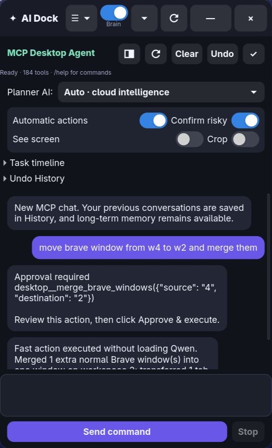

A validated natural-language desktop agent that turns informal requests into observable, recoverable MCP workflows.
Twisted multi-command sentences become mandatory intent contracts. Risky actions pause for approval. Every local outcome is checked.
